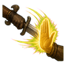

Charm Perception D
D-rank passive. Trained to notice charms: a steadier mind and a warmer manner.
Technique trees › Genjutsu
9 techniques · Genjutsu tab
Learned from technique scrolls, mission rewards, written scrolls and scroll merchants; some NPC ninja know it. It counts toward the ninja build like other trees.
D-rank passive. Trained to notice charms: a steadier mind and a warmer manner.
D-rank. A small charm on one enemy: they can barely bring themselves to fight.
| Rank | Chakra | Cooldown | Class level |
|---|---|---|---|
| D | 10 | 15 s | 2 |
D-rank. Tell a tale of heroes: allies around you are inspired.
| Rank | Chakra | Cooldown | Class level |
|---|---|---|---|
| D | 10 | 25 s | 2 |

C-rank. One enemy's raised weapon stops mid-swing.
| Rank | Chakra | Cooldown | Class level |
|---|---|---|---|
| C | 20 | 15 s | 5 |
C-rank. Your voice holds every enemy around you spellbound for a moment.
| Rank | Chakra | Cooldown | Class level |
|---|---|---|---|
| C | 20 | 15 s | 5 |
B-rank. Bind your nearby allies in friendship: they fight harder for each other.
| Rank | Chakra | Cooldown | Class level |
|---|---|---|---|
| B | 35 | 25 s | 9 |
B-rank. Charm a group of enemies: they barely fight.
| Rank | Chakra | Cooldown | Class level |
|---|---|---|---|
| B | 35 | 25 s | 9 |
A-rank. One enemy is so charmed it wanders away from the fight.
| Rank | Chakra | Cooldown | Class level |
|---|---|---|---|
| A | 55 | 50 s | 13 |
S-rank. S-rank. A charm that spreads from one enemy to the next across a wide area.
| Rank | Chakra | Cooldown | Class level |
|---|---|---|---|
| S | 90 | 200 s | 18 |